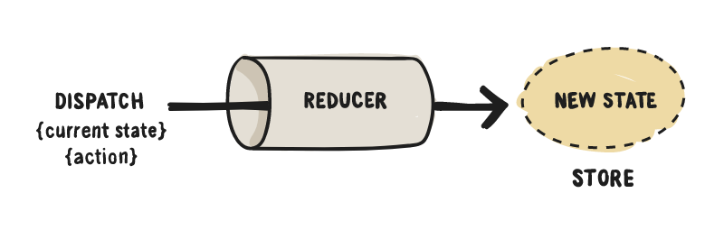

ngrx
RxJS powered state management
Just twitted the slides @jsdude005
What I think about you
- A rockstar
- Angular 2+ guru
- Master in Typescript
- Pro in RxJS
- Redux Nerd
If all is true, come and tell us your secret
Who is
JS Dude?
- Organizer Chicago JavaScript meetup
- Organize Chicago front end developers group
- Giving talk all over the places
- Came to Twin Cities code camp in 2013

Catch me if you want
- @jsdude005
- Website: www.thatJSDude.com
- Interview Questions: github.com/khan4019
- Youtube:youtube.com/c/thatjsdude
- Email: khan4019@gmail.com
Why ngRx
Redux is hard for simple problem and simple for hard problem
Purpose of ngrx
- Share state among components
- Organize user actions
- Cleanly defined what is changed due to what
- Feel like a Nerd
Agenda
- Basic building blocks
- Observable and async pipe
observable
Basic Building Block
- Store
- Action
- Dispatch
- Reducer
Store
- Holds application state
- Only one store for all its application state
- Single source of truth

Action
- Actions
- Action Creator
{
type: 'ADD_TODO',
text: 'Take 8 bathroom breaks'
}
const addTodo = text => ({
type: 'ADD_TODO',
text
})
reducer
- Actions describe the fact that something happened
- Action don't specify how the application's state should change
- How state will change will be defined by reducer
case ADD_TODO:
return [
...state,
{
text: action.text,
completed: false
}
]
reducer
Data Flow
- An action is a plain object describing what happened
- You can call store.dispatch(action) from anywhere in your app
- Redux store calls the reducer function you gave for this action.
- In root reducer you may combine multiple reducers into a single state tree
- The Redux store saves the complete state tree returned by the root reducer
Create your first app
Angular cli
- Command line tool for Angular app
- Makes it easy to create an angular application
- Follow all the best practices
- Generate components, routes, services and pipes with a simple command.
- Easy to run, build, deploy and test
- Go to angular cli installation link
Task 1: Just 4 commands
npm install -g @angular/cli
ng new bangular-bank
cd bangular-bank
ng serve
Other ng new settings
- --style=scss
- --minimal=true
ng-new doc
TypeScript
function add(a: number, b: number) {
return a + b;
}
add(1, 3); // returns 4
add(1, '3'); // causes a compiler error
class TodoItems {
items: string[]; // or Array of string
constructor(initialItems: string[]) {
this.items = initialItems;
}
empty(): boolean {
return this.items.length == 0;
}
}
const allItems = new TodoItems(['install NPM', 'install Node']);
Templating
Data binding
Templating
- A template is HTML that tells Angular how to render a component
- Templates include data bindings as well as other components and directives
- Angular leverages native DOM events and properties which dramatically reduces the need for a ton of builtin directives
- Angular leverages shadow DOM to do some really interesting things with view encapsulation
Data Binding
- Enables data to flow from the component to template and vice-versa
- Includes interpolation, property binding, event binding, and two-way binding
- The binding syntax has expanded but the result is a much smaller framework footprint
{{ todo.name }}
{{ todo.description }}
{{todo.completed}}
ES6
imports
Makes the blocks of functionality available in the imported modules available to the contents of this module
import { Component, OnInit } from '@angular/core';
import { Dog } from '../dog';
Component
What is a component
- Building Block
- Repeating block
- Component grouped together
- Large component broken down into pieces
Create a component
ng generate component user
ng g c user


Component Decorator
- @Component is a decorator that adds metadata to the AppComponent class
- selector tells Angular to use this class to fill in uses of <app-user></app-user>
- templateUrl tells it where to find the HTML to use for filling in
- styleUrls is a list of CSS style files to apply to this component
Including component
{{title}}
- in app.component.ts add <app-user></app-user>
Task 2: use template
- add userName property in user.component.ts
- add template to display userName
Task 3: bind an array
- Create a property with users
- display user name in a list
Services
What services do
- A service is just a javascript class
- Takes heavy funcationality out of component
- Hold common funcationality among components
- Load data from server
- Decorate with @Injectable when we need to inject dependencies into our service
Task 3: create a service
ng g s github\github
Load Data from server
RxJS
- Library for reactive programming
- Array-like methods for dealing with async streams
- Used heavily in Angular..specially in service
Observable
import { Observable } from 'rxjs/Observable';
Observable.create(observer => {
observer.next(42);
})
.subscribe((value: number) => {
console.log(value); // 42
});
Task 4: Load Data
Task 5: Display Data
- import service
- Dependency injection of service
- Call getuserDetail by providing a userId from ngOnInit
- Set user Detail on a property
- Bind user login and profile picture in the dom
Material Design
- Framework used to layout the app responsively
- Do not feel that you need to implement the labs with Angular Material
Install Material Design
Modules
- central building block of Angular
- helps organize code into cohesive blocks of functionality
import { NgModule } from '@angular/core';
@NgModule({
imports: [],
declarations: [],
bootstrap: []
})
Component Life Cycle
- Allow us to perform custom logic at various stages of a component's life
- Data isn't always immediately available in the constructor
- Only available in TypeScript
- The lifecycle interfaces are optional. We recommend adding them to benefit from TypeScript's strong typing and editor tooling
- Implemented as class methods on the component class
- ngOnChanges - called when an input or output binding value changes
- ngOnInit - after the first ngOnChanges
- ngDoCheck - developer's custom change detection
- ngAfterContentInit - after component content initialized
- ngAfterContentChecked - after every check of component content
- ngAfterViewInit - after component's view(s) are initialized
- ngAfterViewChecked - after every check of a component's view(s)
- ngOnDestroy - just before the directive is destroyed.
Pass Data to Component
Using @Input
import { Component, Input } from '@angular/core';
@Component({
selector: 'app-say-hello',
templateUrl: './hello.component.html'
})
export class SayHelloComponent {
@Input()
public name: string;
}
Hello {{name}}!
@Output
- A decorator used to handle "custom" events
- Similar to & callback binding in AngularJS
@output
import { Component, EventEmitter, Output } from '@angular/core';
@Component({
selector: 'app-dog-list',
templateUrl: './dog-list.component.html'
})
export class DogListComponent {
@Output()
public add: new EventEmitter();
@Input()
public dogs: IDog[] = [];
addDog(dog: IDog) {
this.dogs.push(dog);
this.add.emit(dog);
}
}
Routing
Router
- Component Router
- Navigating Routes
- Route Parameters
- Query Parameters
- Child Routes